v.kriging phase=initial in=input_layer icol=name report=report_file.txt file=png
v.kriging in=input_layer phase=middle hz_fun=exponential vert_fun=exponential ic=name file=png hz_range=double vert_range=double -b
v.kriging in=input_layer phase=final final_fun=bivariate icol=name file=png out=name crossval=crossval_file.txt
In the middle phase, there is possible also to modify nugget effect (default: 0.0) and sill (default: calculated from variogram values, more details in (Stopkova, 2014).
The case study is based on the input points of annual precipitation dataset. Although positions of the points are given in three-dimensional space, the points are concentrated at the terrain and thus interpolation above and below the terrain would become imprecise in deeper / higher areas of the dataset. That is the reason to test just cross-section from interpolated 3D raster comparing it with cross-section from the RST result obtained using v.vol.rst according to (Neteler and Mitasova, 2004).
As the algorithm still needs to be optimized for large datasets, the original region was used with lower resolution (hz: 5000 m, vert: 500 m). To test also original resolution, the points in smaller region (Tab. 1) were extracted.
| N = 5 468 000 m | |
| W = 4 361 000 m | E = 4 465 500 m |
| S = 5 374 500 m | |
| top: 2 250 m | bottom: 200 m |
In the initial phase, experimental variograms (horizontal and vertical) were computed:
v.kriging phase=initial in=precip3d@PERMANENT ic=precip report=precip3d.txt file=png --o
v.kriging in=precip3d@PERMANENT phase=middle hz_fun=exponential vert_fun=gaussian ic=precip file=png hz_range=100000. vert_range=1600 --o -u
|
Fig. 1: Experimental and theoretical variograms in horizontal and vertical direction |
| a) whole region (horizontal direction): |
|
|
| b) small region (horizontal direction): |
| 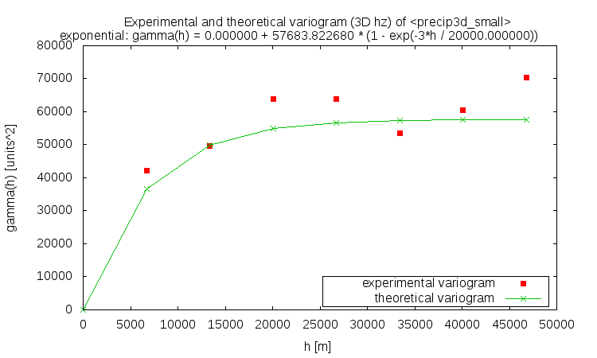 |
| c) small region with modified horizontal range (horizontal direction): |
| 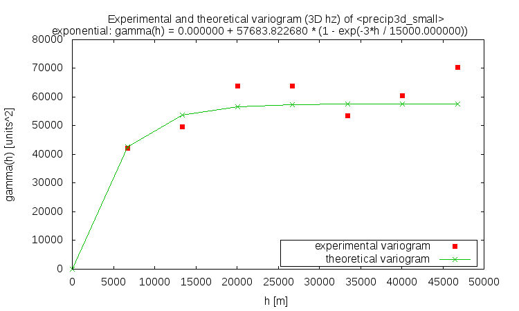 |
| d) whole region (vertical direction): |
|
|
| e) small region (vertical direction): |
|
|
v.kriging in=precip3d@PERMANENT phase=middle hz_fun=exponential vert_fun=gaussian ic=precip \ file=png hz_range=100000. vert_range=1600 --o -u
v.vol.rst -c input="precip3d@PERMANENT" wcolumn="precip" tension=100. smooth=0. \ cvdev="cxvalidation_rst_final" segmax=50 npmin=200 npmax=700 wscale=1.0 zscale=50
| a) linear |

|
| b) exponential |

|
| c) spherical |

|
| d) Gaussian |
| 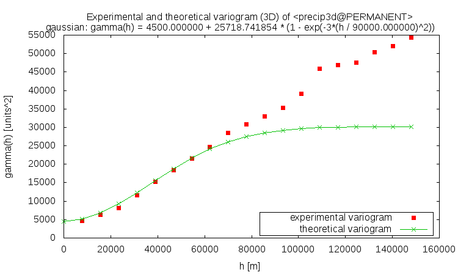 |
| v.vol.rst | Linear | Exponential | Spherical | Gaussian | |
| Minimum [mm] | -816.805 | -684.258 | -686.063 | -683.580 | -741.081 |
| Maximum [mm] | 175.831 | 429.597 | 424.419 | 424.228 | 444.747 |
| Mean [mm] | 0.171 | 0.131 | 0.699 | 0.653 | 0.721 |
| Variance [mm2] | 9876.69 | 5740.89 | 5926.62 | 5950.70 | 5979.79 |
| Std. deviation [mm] | 99.381 | 75.769 | 76.985 | 77.141 | 77.329 |
| a) linear: |

|
| b) exponential: |

|
| c) spherical: |

|
| d) Gaussian: |
| 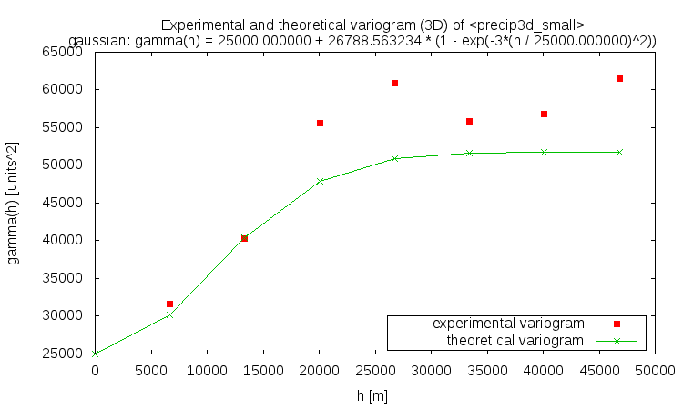 |
| v.vol.rst | Linear | Exponential | Spherical | Gaussian | |
| Minimum [mm] | -908.303 | -709.02 | -755.531 | -678.237 | -786.613 |
| Maximum [mm] | 257.69 | 420.689 | 340.874 | 384.109 | 315.248 |
| Mean [mm] | 0.554 | 0.908 | -0.310 | 1.102 | -0.739 |
| Variance [mm2] | 28891.6 | 15638.7 | 21259.5 | 19754.8 | 21243.2 |
| Std. deviation [mm] | 169.975 | 125.055 | 145.806 | 140.552 | 145.751 |
| a) linear |
| 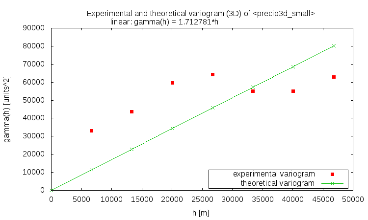 |
| b) exponential |

|
| c) spherical |
| 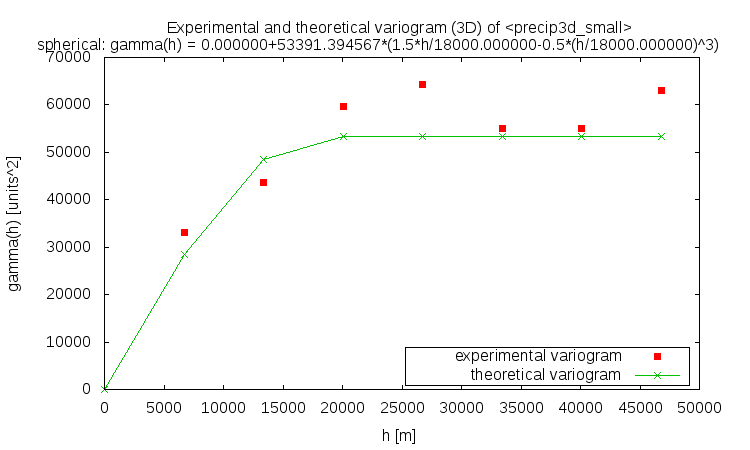 |
| d) Gaussian |
| 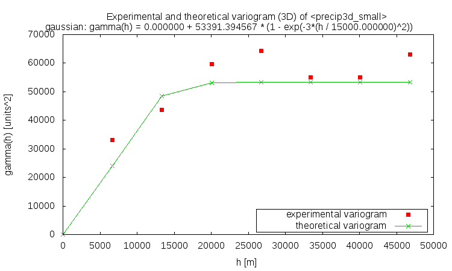 |
| v.vol.rst | Linear | Exponential | Spherical | Gaussian | |
| Minimum [mm] | -908.303 | -711.755 | -756.805 | -687.44 | -529.702 |
| Maximum [mm] | 257.69 | 397.666 | 326.057 | 357.990 | 425.637 |
| Mean [mm] | 0.554 | 0.208 | -1.775 | 1.823 | 0.008 |
| Variance [mm2] | 28891.6 | 15873 | 21438.5 | 20930.9 | 20473.1 |
| Std. deviation [mm] | 169.975 | 125.988 | 146.419 | 144.675 | 143.084 |
 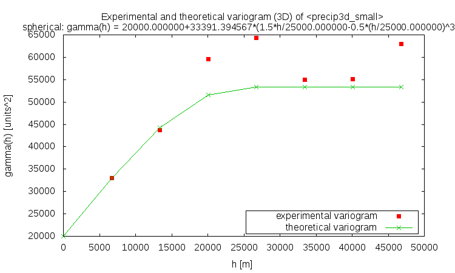
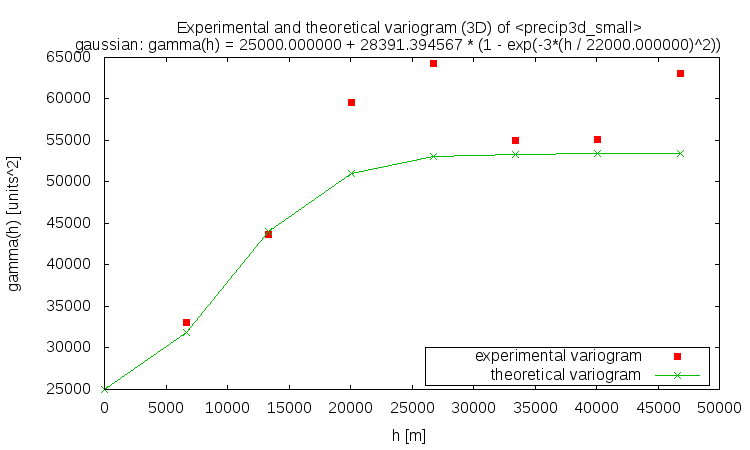
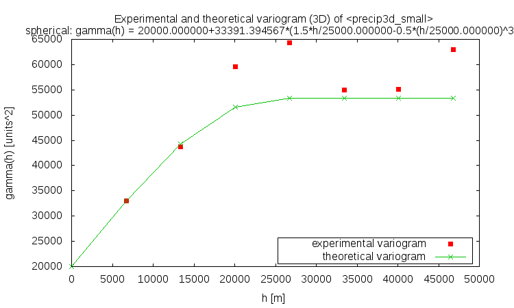
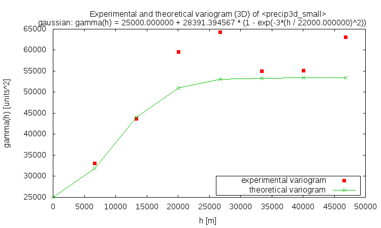
|
| v.vol.rst | Exponential | Spherical | Gaussian | |
| Minimum [mm] | -908.303 | -812.347 | -792.391 | -783.897 |
| Maximum [mm] | 257.69 | 279.905 | 284.76 | 293.146 |
| Mean [mm] | 0.554 | 2.530 | 2.229 | 2.054 |
| Variance [mm2] | 28891.6 | 23983 | 22586.9 | 22209.2 |
| Std. deviation [mm] | 169.975 | 154.865 | 150.289 | 149.028 |
The results were compared just using cross sections because of the distribution of the points. The column RST in following tables summarize statistical characteristics of the cross section by v.vol.rst. Other columns represent statistical characteristics of the cross section values and of the differences (between RST and kriging cross sections) produced by each type of variogram.
| v.vol.rst | Linear | Exponential | Spherical | Gaussian | |||||
| Value | Diff. | Value | Diff. | Value | Diff. | Value | Diff. | ||
| # of cells | 196105 | 196105 | 196105 | 196105 | 196105 | ||||
| Minimum [mm] | 491.985 | 551.835 | -643.783 | 543.503 | -603.59 | 536.309 | -629.652 | 550.935 | -622.887 |
| Maximum [mm] | 1563.660 | 1580.700 | 317.011 | 1572.000 | 316.938 | 1578.820 | 320.219 | 1548.51 | 356.881 |
| Mean [mm] | 722.036 | 744.689 | -22.657 | 740.308 | -18.271 | 740.968 | -18.932 | 747.655 | -25.6238 |
| Variance mm2 | 14472.9 | 29200.5 | 7978.76 | 28614.7 | 6978.35 | 29263.9 | 7338.56 | 31396.1 | 9139.46 |
| Std. deviation [mm] | 120.303 | 170.882 | 89.324 | 169.159 | 83.5365 | 171.067 | 85.665 | 177.189 | 95.601 |
| left: linear variogram; right: exponential variogram |
 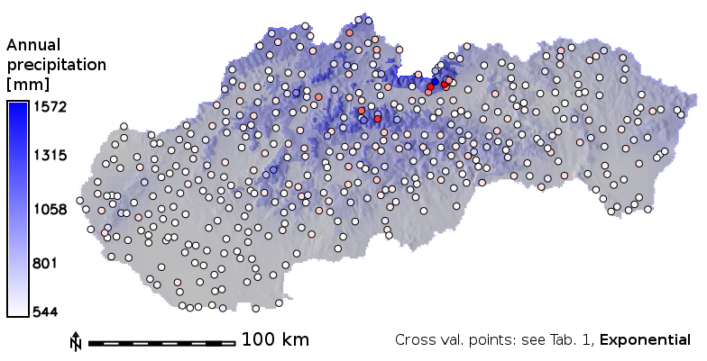
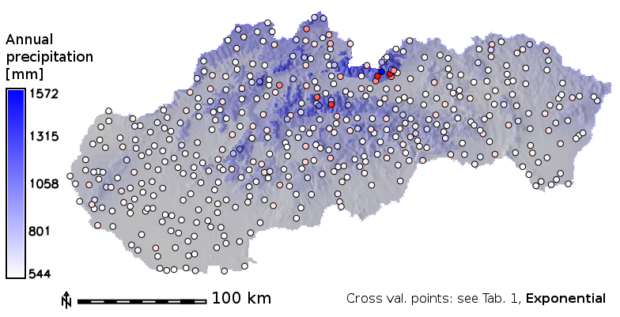
|
| left: spherical variogram; right: Gaussian variogram |
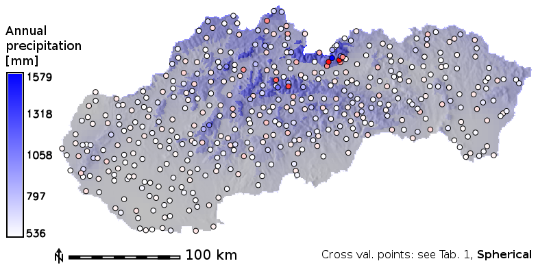

|
| v.vol.rst | Linear | Exponential | Spherical | Gaussian | |||||
| Value | Diff. | Value | Diff. | Value | Diff. | Value | Diff. | ||
| # of cells | 37639 | 37639 | 37639 | 37639 | 37639 | ||||
| Minimum [mm] | 600.922 | 580.245 | -669.397 | 595.692 | -513.497 | 591.531 | -639.105 | 608.913 | -378.109 |
| Maximum [mm] | 1675.090 | 1916.93 | 203.666 | 1837.18 | 172.858 | 1936.17 | 217.189 | 1545.81 | 244.875 |
| Mean [mm] | 883.909 | 893.167 | -9.258 | 869.083 | 14.826 | 863.901 | 20.0083 | 871.364 | 12.5451 |
| Variance mm2 | 11102 | 39059.1 | 11442.7 | 22743.8 | 3941.73 | 26359.9 | 5983.39 | 20350.4 | 3796.5 |
| Std. deviation [mm] | 105.366 | 197.634 | 106.97 | 150.811 | 62.7832 | 162.357 | 77.352 | 142.655 | 61.616 |
| v.vol.rst | Linear | Exponential | Spherical | Gaussian | |||||
| Value | Diff. | Value | Diff. | Value | Diff. | Value | Diff. | ||
| # of cells | 37639 | 37639 | 37639 | 37639 | 37639 | ||||
| Minimum [mm] | 600.922 | 576.625 | -709.196 | 595.284 | -580.65 | 594.467 | -665.563 | 556.744 | -937.124 |
| Maximum [mm] | 1675.090 | 1920.29 | 217.844 | 1847.160 | 199.350 | 1925.91 | 209.544 | 2218.170 | 249.345 |
| Mean [mm] | 883.909 | 886.734 | -2.82485 | 865.272 | 18.6376 | 860.772 | 23.137 | 860.294 | 23.615 |
| Variance mm2 | 11102 | 37500.3 | 10985.4 | 23111.1 | 4697.95 | 25530.4 | 6226.34 | 32575 | 10525.7 |
| Std. deviation [mm] | 105.366 | 193.65 | 104.811 | 152.023 | 68.5416 | 159.782 | 78.907 | 180.485 | 102.595 |
| v.vol.rst | Exponential | Spherical | Gaussian | ||||
| Value | Diff. | Value | Diff. | Value | Diff. | ||
| # of cells | 37639 | 37639 | 37639 | 37639 | |||
| Minimum [mm] | 600.922 | 618.417 | -453.562 | 600.733 | -665.563 | 608.602 | -415.753 |
| Maximum [mm] | 1675.090 | 1687.83 | 177.512 | 1586.71 | 209.544 | 1571.55 | 238.521 |
| Mean [mm] | 883.909 | 867.071 | 16.8376 | 867.047 | 23.137 | 867.075 | 16.834 |
| Variance mm2 | 11102 | 18570.3 | 3191.89 | 19377.5 | 6226.34 | 19744.4 | 4155.31 |
| Std. deviation [mm] | 105.366 | 136.273 | 41.737 | 139.203 | 78.907 | 140.515 | 64.462 |
| Gaussian variogram from Tab. 4 vs. Exponential variogram from Tab. 5 |


|
| Linear variogram from Tab. 4 vs. Spherical variogram from Tab. 5 |


|
| Exponential variogram from Tab. 3 vs. Gaussian variogram from Tab. 5 |
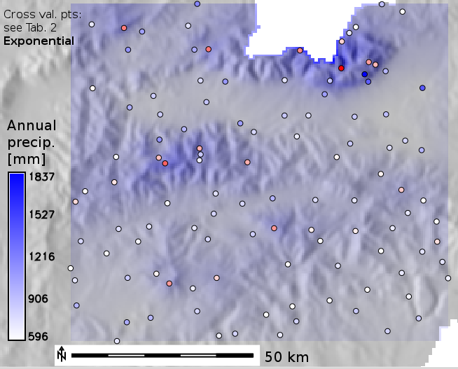

|
More case studies on 3D data are described in (Stopkova, 2014).
v.kriging phase=initial in=input_layer icol=name report=report_file.txt file=png -2
v.kriging in=input_layer phase=final final_function=linear icol=name file=png \ out=name crossval=crossval_file.txt -2
The case study is based on 500 random points that were extracted from input points of Digital Elevation Model (DEM) elev_lid792_randpts from the North Carolina dataset.
In initial phase, temporary experimental variogram was computed:
v.kriging phase=initial in=elev_lid792_selected ic=value azimuth=45. td=45. \ report=lid792_500_linear.txt -2 --o
v.kriging in=elev_lid792_selected phase=final final_function=linear ic=value \ file=png out=lid792_500_linear crossval=lid792_500_xval_linear.txt -2 --o


|
The results were compared with the values interpolated using the module v.surf.rst and kriging tool of Surfer (Golden Software, Inc.). Fig. 9a - 9c show interpolated DEM and the comparisons with the results of another interpolation tools. Statistical characteristics of the results are summarized in Tab. 10.


|
| Fig. 9: a - the DEM interpolated using v.kriging, b - the difference between v.kriging and v.surf.rst, c - the difference between v.kriging and Surfer (Golden Software, Inc.)) |
| Results | v.kriging | v.surf.rst | Surfer (Golden Software, Inc.) | ||
| Values | Differences | Values | Differences | ||
| Minimum [m] | 105.114 | 105.061 | -1.065 | 105.090 | -1.181 |
| Maximum [m] | 131.510 | 131.570 | 2.072 | 131.510 | 0.522 |
| Mean [m] | 120.763 | 120.781 | 0.018 | 120.584 | -0.178 |
| Variance [m2] | 43.7367 | 43.2701 | 0.045581 | 44.2389 | 0.027244 |
| Standard deviation [m] | 6.613 | 6.578 | 0.165 | 6.651 | 0.213 |
| 95% quantile [m] | 130.115 | 130.109 | 0.225 | 130.088 | 0.213 |
| 75% quantile [m] | 126.580 | 126.587 | 0.046 | 126.434 | -0.047 |
| 50% quantile [m] | 121.315 | 121.325 | 0.000 | 121.080 | -0.190 |
| 25% quantile [m] | 115.749 | 115.786 | -0.047 | 115.489 | -0.328 |
| 5% quantile [m] | 109.004 | 109.115 | -0.139 | 108.800 | -0.487 |
v.surf.rst -c input="elev_lid792_selected@test_kriging" layer="1" zcolumn="value" \ cvdev="lid792_500_rst_xval" tension=40 segmax=30 npmin=120 dmin=5.000000 dmax=25.000000 zscale=1.0
| 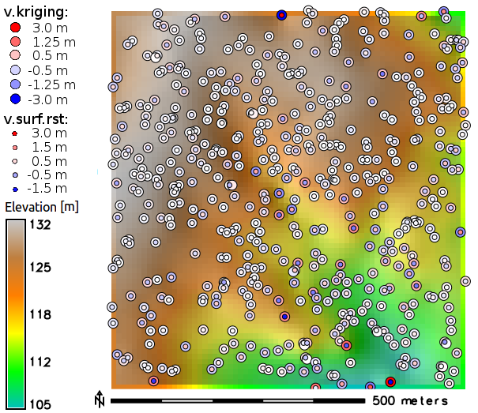 |
| Fig. 10: Cross validation by v.kriging and v.surf.rst |
| Cross validation | v.kriging | v.surf.rst | Surfer (Golden Software, Inc.) |
| Minimum [m] | -2.990 | -1.593 | -2.344 |
| Maximum [m] | 2.399 | 3.362 | 3.011 |
| Mean [m] | -0.004 | 0.004 | 0.003 |
| Variance [m2] | 0.132490 | 0.143742 | 0.133809 |
| Standard deviation [m] | 0.364 | 0.379 | 0.366 |
| 95% quantile [m] | 0.434 | 0.557 | 0.584 |
| 50% quantile [m] | 0.018 | -0.013 | -0.020 |
| 25% quantile [m] | -0.113 | -0.144 | -0.126 |
| 5% quantile [m] | -0.587 | -0.499 | -0.445 |
Recommendations
| In case of too much warnings about input points that have "less than 2 neighbours in its closest surrounding. The perimeter of the surrounding will be increased...", please consider shorter variogram range. |
| Save just figures with theoretical variogram (using file=extension in the middle and final phase). Experimental variograms are included in the theoretical variogram plot and separate "experimental" plots can be just temporal. |
References
| Neteler, M. and Mitasova, H. (2004). Open Source GIS: A GRASS GIS Approach. 2nd Ed. 401 pp, Springer, New York. Online Supplement: http://www.grassbook.org |
| Stopkova, E. (2014). Development and application of 3D analytical functions in spatial analyses (Unpublished doctoral dissertation). The Department of Theoretical Geodesy, Faculty of Civil Engineering of Slovak University of Technology in Bratislava, Slovakia. |
Last changed: $Date$